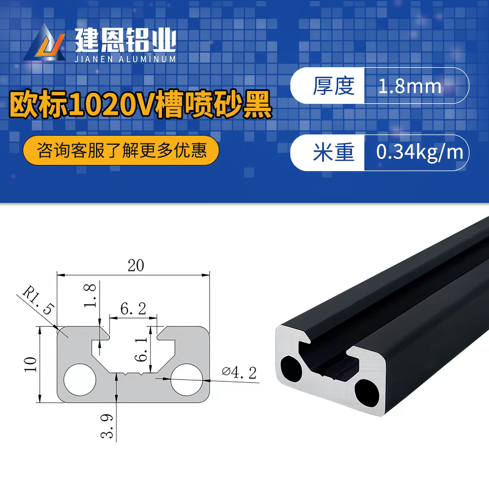

10 × 20 mm 型材 · 双盒五层小货架
单面 V 槽型材，承托横梁 20 mm 宽面水平、10 mm 竖向 · 无层板 · 每层两个 312 × 225 × 75 mm 盒子 · 单位 mm
正视图 · 从取盒侧看
图中四段 110 mm 是相邻两层托梁顶面到顶面的层距。第一至第五层托面离地依次为 73 / 183 / 293 / 403 / 513 mm；两层之间的盒位净高为 110 − 10 = 100 mm，放入高 75 mm 的盒子后，盒顶至上一层前梁底净空为 25 mm。正面低挡边高 5 mm，取盒时轻抬越过挡边。
俯视图 · 每层盒位
立柱沿长边占 10，型材内净长 635：两个盒子共占 624，中间留 5，左右距立柱内侧各留 3。外框宽仍为 245：盒宽 225，前后距外缘各留 10。前后长梁各有 10 mm 位于盒底下方；中间托梁跨越两梁内侧的 205 mm 净距，中心距暂定 120。承托梁的 V 槽朝下，平整的 20 mm 宽面朝上。
型材下料表
| 构件 | 单根长度 | 数量 |
|---|---|---|
| 四角立柱，顶端齐盒沿 | 525 | 4 |
| 前 / 后长边横梁，每层 2 根 | 635 | 10 |
| 盒底托梁，每盒 2 根、每层 4 根 | 205 | 20 |
| 底部左右窄边连接梁 | 205 | 2 |
| 最上层左右护栏 | 205 | 2 |
| 10 × 20 型材合计 | 13,370 mm | 38 根切件 |
尺寸以横梁顶在立柱之间、无额外连接块为前提。按 2 m 原材及每刀约 3 mm 锯缝，7 根可排下：3 根各切 3 × 635；第 4 根切 635 + 2 × 525 + 205；第 5、6 根各切 525 + 7 × 205；第 7 根切 9 × 205。共需 24 根 205 mm 切件，其中 20 根托梁、4 根窄边梁。连接件若占长度，先修正下料值。
其余材料
| 材料 | 规格 / 数量 |
|---|---|
| 层板 | 不使用；盒底直接放在每盒两根平行托梁上 |
| 万向轮 | 图示 40 mm 轮径、安装高 60，4 只；前方 2 只带刹车 |
| 轮子转接板 | 约 70 × 70 × 3 mm 金属板，4 块；轮板 43 × 60 mm，M6 孔距约 30 × 45 mm |
| 连接 / 防晃 | 68 个梁端连接位置，配件和螺丝估算见下表；背面和两侧外侧设置 X 形斜拉 |
| 防滑 / 挡边 | 托梁顶面贴防滑条；每层前后长梁各装 5 mm 高低挡边，共 10 条 |
连接件与紧固件估算
| 连接位置 | 连接件 | 数量 | 槽内 T 型螺母 + 螺丝 |
|---|---|---|---|
| 20 根盒底托梁的两端 | 一字连接平片，每件 2 孔 | 40 件 | 80 套 |
| 10 根前 / 后长梁的两端 | 90° 角码，暂按每件 2 孔 | 20 件 | 40 套 |
| 2 根底部窄边梁 + 2 根顶部护栏的两端 | L 型平片，暂按每件 2 孔 | 8 件 | 16 套 |
| 梁端合计 | 40 件一字片 + 20 件角码 + 8 件 L 片 | 68 处 | 136 套 |
一字片装在梁底，沿盒底托梁的方向跨过与前 / 后长梁的 T 形接缝；一孔锁入长梁朝下的 V 槽，另一孔锁入托梁朝下的 V 槽。两梁底面均须齐平，片宽和孔距按实物槽位确定。相比每件 3 孔的 T 型平片，40 处接头共少用 40 套螺母和螺丝。两孔连接依赖接缝贴合和螺丝锁紧，先试装一处，检查托梁是否会转动或松动。
一套指 1 颗螺丝 + 1 颗与实际型材槽匹配的 T 型螺母。136 套仅适用于上表孔数、且所有孔均采用槽内螺母的方案；若改用四孔角码、端孔攻丝或穿孔固定，应按实物重算。窄边 L 片可能侵入盒子距立柱仅 3 mm 的侧隙，必须先试装；必要时改用外侧固定片或其他不占盒位的接头。
另计：4 只脚轮与转接板相连，按每只 4 孔准备 16 套 M6 螺栓及锁紧螺母，不计入上述 136 套。转接板若用每根立柱的两个纵向孔固定，还需 8 颗适配螺钉，但须先确认端孔能否攻丝及板孔位。背面和两侧共 3 组 X 形斜拉有 12 个端部固定点；若不能共用角码螺栓且能用型材槽固定，槽内螺母与螺丝各增 12 颗至 148 套，否则应选其他固定方式。
安装顺序与关键细节
- 先用底层横梁连接四根角立柱，复核 655 × 245 外框及对角线；四角底部装金属转接板，再把四个轮子固定在转接板下。43 × 60 的轮板不能直接锁在 10 × 20 mm 的型材端面。
- 自下而上安装五层前后长梁。梁底离地依次为 63、173、283、393、503；每层四根 205 mm 托梁跨接前后长梁，所有托梁顶面与长梁顶面齐平。前后长梁各有 10 mm 宽度伸入盒底下方。
- 每个盒子下方放两根托梁，中心距暂定 120 mm，用实物确认盒底接触后锁紧连接件。前后长梁各装 5 mm 高低挡边；最上层只在左右窄边装护栏，护栏的 20 mm 边保持竖向，其上沿与盒沿同为离地 588。
- 安装背面与左右两侧的 X 形斜拉，收紧后再复核架体垂直。
- 用带刹车的两只轮子放在取盒侧；重物优先放低层，取放或停放时锁住刹车。
轮高、轮板和孔距来自给定图片，图上标注为手工测量；金属板具体孔位、轮子旋转包络及实际高度均须拿到实物后复测。588 mm 总高是按轮 60 + 转接板 3 + 承托梁竖向高度 10 + 四次层距 110 + 盒高 75 相加的理论值，距 650 mm 上限尚有 62 mm。655 × 245 是型材外框尺寸，轮子旋转时的实际占地可能更大；推行时从低处施力，避免盒子集中放在上层。
型材截面与连接确认

图示型材为 10 × 20 mm、壁厚 1.8 mm 的单面 V 槽款，槽口约 6.2 mm，另有两条标注为 Ø4.2 mm 的纵向孔。前后长梁与盒底托梁均以 20 mm 宽面水平、10 mm 边竖向安装，V 槽朝下，让另一侧平整的 20 mm 宽面接触盒底。窄边护栏则以 20 mm 边竖向安装。按图示 0.34 kg/m 米重，13.37 m 型材约重 4.55 kg，未计连接件和轮子。
这款型材不是四面开槽的标准 2020。采购前请卖家按槽口、槽腔尺寸及连接片孔径确认 T 型螺母和螺丝规格；螺丝长度还取决于连接片厚度。用实际连接件核对端孔能否攻丝、梁端长度、托梁顶面齐平和盒位净空；不要按 2020 连接件直接下单。